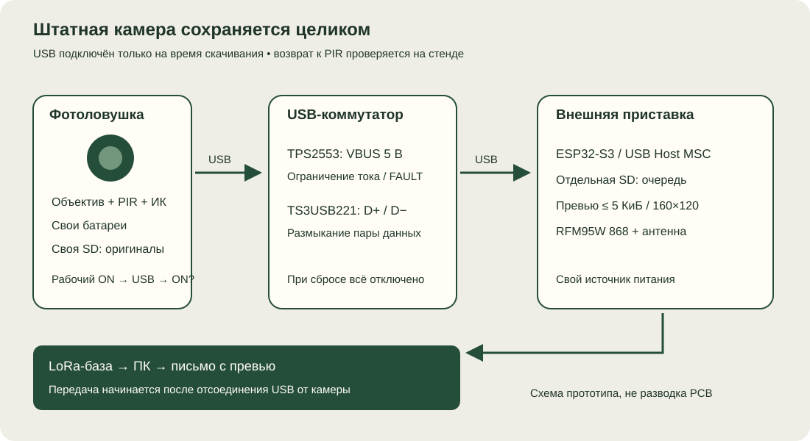

Недорогая заводская камера сохраняет штатную оптику, PIR и ночную подсветку. Отдельная приставка ESP32-S3 скачивает JPEG и передаёт маленькое превью по LoRa. USB-опыт с реальной HT-001 пока не проведён; готовой прошивки USB-приставки в проекте нет.
Что подтверждает инструкция
Руководство HT-001, страница 3, пункт 1.3(d), описывает переход в USB-режим при подключении к компьютеру: карта становится съёмным диском. Отдельная команда меню не указана.
На странице 9 подключение кабеля и появление диска описаны внутри раздела TEST. Автоматическая съёмка по PIR в ON описана отдельно, на странице 10. Документированный порядок: установить карту при выключенной камере, перевести переключатель в TEST, подключить USB к хосту. Руководство находится на стороннем зеркале; соответствие купленной ревизии проверить.
| Возможность | Статус |
|---|---|
| Чтение карты через USB как съёмного диска | Описано |
| Отдельная кнопка или команда включения USB | Не описана |
| Чтение через USB в ON | Не подтверждено |
| Автоматический возврат к PIR после отключения USB | Не подтверждён |
| Достаточность отключения только VBUS | Не подтверждена |
| MSC/BOT/Transparent SCSI для драйвера S3 | Проверить USB-дескрипторы |
Инструкция позволяет выбрать HT-001 для недорогого USB-стенда. Полностью автоматическая работа одной только коммутацией 5 В пока не установлена.
Что подключаем к камере

Штатная камера сохраняет свою плату, питание и карту. Снаружи устанавливаем ESP32-S3 с USB Host, защищённый ключ VBUS, переключатель D+/D−, собственную microSD для очереди и RFM95W 868 с отдельной антенной. Детали и GPIO приведены в общем USB-проекте. ESP32-CAM и обычный ESP32 DevKit не заменяют S3 в этой схеме.
Сначала собирать блок снаружи: внутренние размеры HT-001 и свободный объём около разъёма не измерены. К штатной SD-шине не подключаемся. Камера пишет оригинал; приставка копирует завершённый JPG, отключается и затем готовит превью. Оригиналы не удаляются.
Вариант 1: ручной USB-стенд
- Камера снимает по движению в ON.
- Пользователь переводит её в TEST и подключает приставку вместо ноутбука.
- S3 копирует все новые завершённые JPEG на свою карту, закрывает файлы, размонтирует диск и отключает USB.
- Пользователь возвращает переключатель в ON.
- Приставка отправляет превью через LoRa на существующую базу.
Это первый опыт для отдельной проверки USB-скачивания и радиопередачи. Он требует человека и не является автономным полевым режимом.
Вариант 2: периодический автоматический опрос
Возможен только если реальная HT-001 позволяет читать USB в ON и после отключения сама возвращается к PIR. Тогда S3 по таймеру подключает USB, копирует новые файлы, размыкает данные и отключает VBUS. Превью отправляется после отсоединения USB, чтобы длительная LoRa-передача не удерживала камеру в режиме диска.
Если обязательно переключение TEST/ON, нужна отдельная доработка управления штатным переключателем. Её нельзя считать простой приставкой без вмешательства. Не объявлять этот вариант работающим до проверки конкретной камеры.
Как проверить HT-001 перед доработкой
- Записать маркировку и версию прошивки; установить запасную карту и снять несколько кадров в ON.
- Перевести в TEST, подключить ноутбук, проверить чтение файлов. Для выбранного MSC-драйвера требуются интерфейс 08h / подкласс 06h / протокол 50h; это требование драйвера, а не установленный факт о HT-001.
- Безопасно извлечь диск, отключить кабель, вернуть ON и проверить новый снимок по PIR.
- Повторить подключение при переключателе ON. Записать появление диска и поведение съёмки.
- Отсоединить USB без перемещения переключателя. Проверить новые снимки через 1, 5, 10, 30 и 60 секунд.
- При успешных переходах провести 100 циклов с приставкой, включая reset S3 и обрыв копирования. Проверить целостность карты и восстановление съёмки.
Приставка не форматирует камерную карту и не пишет на неё. Дедупликация по содержимому, а не только имени и дате. Видео пропускаем, JPG уменьшаем до 160×120 и бюджета 5 КиБ после отключения USB. Обработка больших JPEG на S3 требует отдельной реализации; ПК-модуль превью не является прошивкой USB-хоста.
Камера и материалы
HT-001 на Ozon — в исследовании 07.10.2026 отображалась цена около 3 765 ₽; это не фиксированная цена покупки. Описание на сайте Suntek. Проверить точную маркировку и комплектный кабель данных перед заказом.
Библиотека PDF · Общая схема USB-приставки · Спецификация и ПК-прототип ZIP.